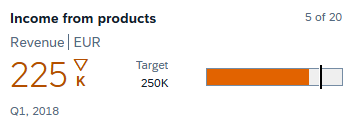
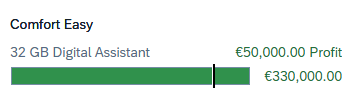
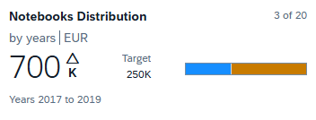
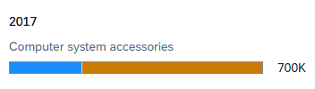
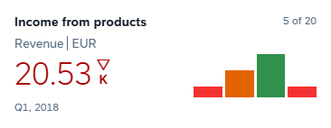
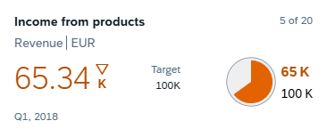
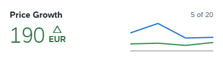
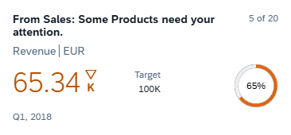

Card Micro Charts
Micro Charts help you to visualize information in a compact non-interactive manner. They are used to
display changes in the data or provide tracking at a glance.
Currently supported types for Numeric Header are Bullet, Column, HarveyBall, Line, Radial and StackedBar.
Supported types for List Card are Bullet and StackedBar.
For more information when to use them read the Fiori Design Guidelines.
Note: Implementation may vary for mobile native cards.
Properties
Micro Charts have the following common properties:
| Property | Type | Default Value | Required | Description | Schema Version | Since |
|---|---|---|---|---|---|---|
| type | "Bullet", "Column", "HarveyBall", "Line", "Radial", "StackedBar" | Yes |
Specifies one of the available micro charts types. See details for every different type below.
Note Only "Bullet" and "StackedBar" are supported in List Card. Note Since 1.124 all types are supported in Numeric Header. Note: Implementation may vary for mobile native cards. |
1.24 | 1.80 | |
| visible | boolean | true | No | Visibility of the micro chart. | 1.56.0 | 1.116 |
Bullet Micro Chart


| Property | Type | Default Value | Required | Description | Schema Version | Since |
|---|---|---|---|---|---|---|
| value | float | Yes | The actual value. | 1.24 | 1.80 | |
| size | Size | "Responsive" | No | The size of the chart. | 1.68 | 1.155 |
| color | sap.m.ValueColor | "Neutral" | No | The color of the chart. | 1.24 | 1.80 |
| displayValue | string | No | The value, which is displayed next to the chart. | 1.24 | 1.80 | |
| maxValue | float | No | The maximum value. | 1.24 | 1.80 | |
| minValue | float | No | The minimum value. | 1.24 | 1.80 | |
| target | float | No | The target value. | 1.24 | 1.80 | |
| thresholds | Threshold[] | No | The thresholds of the chart. | 1.24 | 1.80 |
| Property | Type | Default Value | Required | Description | Schema Version | Since |
|---|---|---|---|---|---|---|
| value | float | Yes | The value of the threshold. | 1.24 | 1.80 | |
| color | sap.m.ValueColor | "Neutral" | No | The color of the threshold. | 1.24 | 1.80 |
StackedBar Micro Chart


Note: For this type of chart a legend is also displayed in the card.
Note: The size property is not supported for this chart. Size S
and size Responsive result in the same size within the space available in the card. If the
property is passed, it is ignored and an error is logged in the console.
| Property | Type | Default Value | Required | Description | Schema Version | Since |
|---|---|---|---|---|---|---|
| bars | Bar[] | Yes | The bars of the micro chart. | 1.24 | 1.80 | |
| displayValue | string | No | The value, which is displayed next to the chart. | 1.24 | 1.80 | |
| maxValue | float | No | The maximum value. | 1.24 | 1.80 | |
| displayZeroValue | boolean | true | No | Defines whether bars with zero values are displayed. | 1.65 | 1.126 |
| Property | Type | Default Value | Required | Description | Schema Version | Since |
|---|---|---|---|---|---|---|
| value | float | Yes | The value of the bar. | 1.24 | 1.80 | |
| color | sap.m.ValueColor | No | The color of the bar. | 1.24 | 1.80 | |
| displayValue | string | No | The display value of the bar. Note: Due to space restrictions, the value is not displayed inside the bar, but only in the tooltip. | 1.24 | 1.80 | |
| legendTitle | string | No | Title, which will be displayed in the legend. | 1.24 | 1.80 |
Column Micro Chart

| Property | Type | Default Value | Required | Description | Since |
|---|---|---|---|---|---|
| columns | Column[] | Yes | The columns of the micro chart. Can be a static array or a binding info with path and template. |
1.124 | |
| size | Size | "Responsive" | No | The size of the chart. | 1.124 |
| leftTopLabel | string | No | The top label on the left side of the chart. | 1.124 | |
| leftBottomLabel | string | No | The bottom label on the left side of the chart. | 1.124 | |
| rightTopLabel | string | No | The top label on the right side of the chart. | 1.124 | |
| rightBottomLabel | string | No | The bottom label on the right side of the chart. | 1.124 |
| Property | Type | Default Value | Required | Description | Since |
|---|---|---|---|---|---|
| value | float | Yes | The value of the column. | 1.124 | |
| color | sap.m.ValueColor | "Neutral" | No | The color of the column. | 1.124 |
| label | string | No | The label of the column. | 1.124 | |
| displayValue | string | No | The value, which is displayed as a text for the column. | 1.124 |
HarveyBall Micro Chart

| Property | Type | Default Value | Required | Description | Since |
|---|---|---|---|---|---|
| fraction | float | Yes | The fraction value, shown as a colored slice. | 1.124 | |
| total | float | Yes | The total value of the chart. | 1.124 | |
| size | Size | "Responsive" | No | The size of the chart. | 1.124 |
| color | sap.m.ValueColor | "Neutral" | No | The color of the fraction slice. | 1.124 |
| fractionScale | string | No | The scaling suffix appended to the fraction value. | 1.124 | |
| totalScale | string | No | The scaling suffix appended to the total value. | 1.124 | |
| showTotal | boolean | false | No | Defines whether the total value is shown. | 1.155 |
| fractionLabel | string | No | The label displayed for the fraction. Overrides the default label. | 1.124 |
Line Micro Chart

Note: The label properties (leftTopLabel, leftBottomLabel,
rightTopLabel, rightBottomLabel) and the showPoints property work
only with size S. They are not visible with size Responsive.
| Property | Type | Default Value | Required | Description | Since |
|---|---|---|---|---|---|
| lines | Line[] | No | The lines of the micro chart. Can be a static array or a binding info with path and template. Use either lines or points. |
1.124 | |
| points | Point[] | No | The points of a single line. Can be a static array or a binding info with path and template. Use either lines or points. |
1.124 | |
| size | Size | "Responsive" | No | The size of the chart. | 1.124 |
| color | sap.m.ValueColor | "Neutral" | No | The color of the line. Used as a fallback when a line does not define its own color. | 1.124 |
| threshold | float | 0 | No | The threshold value, displayed as a horizontal line. | 1.124 |
| showThresholdLine | boolean | true | No | Defines whether the threshold line is displayed. Only visible with size S. |
1.124 |
| maxXValue | float | No | The maximum value of the X axis. | 1.124 | |
| minXValue | float | No | The minimum value of the X axis. | 1.124 | |
| maxYValue | float | No | The maximum value of the Y axis. | 1.124 | |
| minYValue | float | No | The minimum value of the Y axis. | 1.124 | |
| leftTopLabel | string | No | The top label on the left side of the chart. Only visible with size S. |
1.124 | |
| leftBottomLabel | string | No | The bottom label on the left side of the chart. Only visible with size S. |
1.124 | |
| rightTopLabel | string | No | The top label on the right side of the chart. Only visible with size S. |
1.124 | |
| rightBottomLabel | string | No | The bottom label on the right side of the chart. Only visible with size S. |
1.124 |
| Property | Type | Default Value | Required | Description | Since |
|---|---|---|---|---|---|
| points | Point[] | Yes | The points of the line. Can be a static array or a binding info with path and template. |
1.124 | |
| color | sap.m.ValueColor | "Neutral" | No | The color of the line. | 1.124 |
| lineType | string | "Solid" | No | The type of the line, for example Solid or Dotted. |
1.124 |
| showPoints | boolean | false | No | Defines whether the points of the line are shown. Only visible with size S. |
1.124 |
| Property | Type | Default Value | Required | Description | Since |
|---|---|---|---|---|---|
| x | float | Yes | The value on the X axis. | 1.124 | |
| y | float | Yes | The value on the Y axis. | 1.124 |
Radial Micro Chart

The displayed percentage can be provided directly via percentage, or calculated by the
chart from fraction and total.
| Property | Type | Default Value | Required | Description | Since |
|---|---|---|---|---|---|
| percentage | float | No | The percentage shown by the chart. Alternative to providing fraction and total. |
1.124 | |
| fraction | float | No | The fraction value. Used together with total to calculate the percentage. |
1.124 | |
| total | float | No | The total value. Used together with fraction to calculate the percentage. |
1.124 | |
| size | Size | "Responsive" | No | The size of the chart. | 1.124 |
| color | sap.m.ValueColor | "Neutral" | No | The color of the completed part of the chart. | 1.124 |
| showPercentageSymbol | boolean | true | No | Defines whether the percentage symbol is shown. | 1.124 |
Sizing
Most chart types expose a size property of type Size. Only the values
S and Responsive are supported. The other values of
sap.m.Size are not supported, because they
do not fit well in the available space in the card. If an unsupported value is provided, the chart falls
back to Responsive and an error is logged in the console.
Note: size: "S" is available only for charts in the card header. It is not supported
for charts in list items, where it is ignored and an error is logged in the console.
| Value | Description |
|---|---|
| "Responsive" | The default. Prioritizes the size of the chart graphic itself and may not leave space for all labels. The labels remain available in the tooltip of the chart. |
| "S" | A fixed small size. Leaves space for the labels of the chart, so label-related properties are visible. Available only for charts in the card header. |
Examples
Example of a List card with Bullet micro charts:
{
"_version": "1.84.0",
"$schema": "https://raw.githubusercontent.com/SAP/ui5-manifest/v1.84.0/schema.json",
"sap.app": {
"type": "card",
"applicationVersion": {
"version": "1.0.0"
}
},
"sap.card": {
"type": "List",
"header": {
"title": "Request list content Card"
},
"content": {
"data": {
"json": [
{
"Name": "Comfort Easy",
"Description": "32 GB Digital Assistant with high-resolution color screen",
"Expected": 300000,
"Actual": 330000,
"Target": 280000,
"ChartColor": "Good"
},
{
"Name": "ITelO Vault",
"Description": "Digital Organizer with State-of-the-Art Storage Encryption",
"Expected": 230000,
"Actual": 225000,
"Target": 210000,
"ChartColor": "Good"
}
]
},
"item": {
"title": "{Name}",
"description": "{Description}",
"chart": {
"type": "Bullet",
"minValue": 0,
"maxValue": "{Expected}",
"target": "{Target}",
"value": "{Actual}",
"color": "{ChartColor}"
}
}
}
}
}
Example of a List card with StackedBar micro charts:
{
"_version": "1.84.0",
"$schema": "https://raw.githubusercontent.com/SAP/ui5-manifest/v1.84.0/schema.json",
"sap.app": {
"type": "card",
"applicationVersion": {
"version": "1.0.0"
}
},
"sap.card": {
"type": "List",
"header": {
"title": "Request list content Card"
},
"content": {
"data": {
"json": [
{
"Year": 2017,
"Category": "Computer system accessories",
"Notebook13": 200,
"Notebook17": 500
},
{
"Year": 2018,
"Category": "Computer system accessories",
"Notebook13": 300,
"Notebook17": 320
}
]
},
"item": {
"title": "Notebooks Distribution",
"subtitle": "by years",
"chart": {
"type": "StackedBar",
"displayValue": "{= ${Notebook13} + ${Notebook17}}K",
"maxValue": "{/maxOverYears}",
"bars": [
{
"value": "{Notebook13}",
"displayValue": "Notebook 13: {Notebook13}K",
"legendTitle": "Notebook13"
},
{
"value": "{Notebook17}",
"displayValue": "Notebook 17: {Notebook17}K",
"legendTitle": "Notebook17"
}
]
}
}
}
}
}
Try it Out